documents

John C. Frémont's ten-square mile "floating" land grant. (Newell D. Chamberlain, The Call of Gold: True Tales on the Gold Road to Yosemite (Mariposa, Calif.: Gazette Press, 1936), iix.)
- 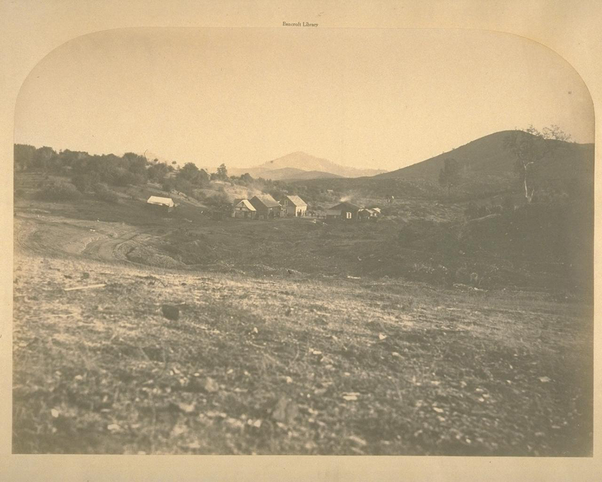
Agua Frio. Carleton E. Watkins, date unknown. (UC Berkeley, Bancroft Library).
- 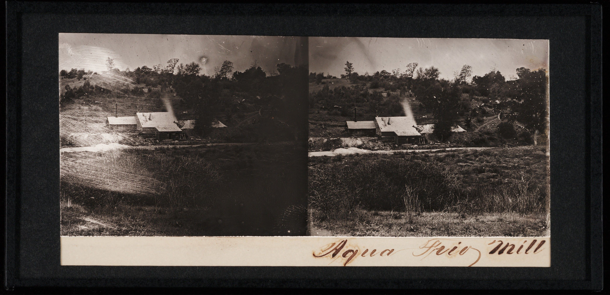
Agua Frio Mill. Carleton E. Watkins, ca. 1861. (Beinecke Rare Book and Manuscript Library, Yale University).
- 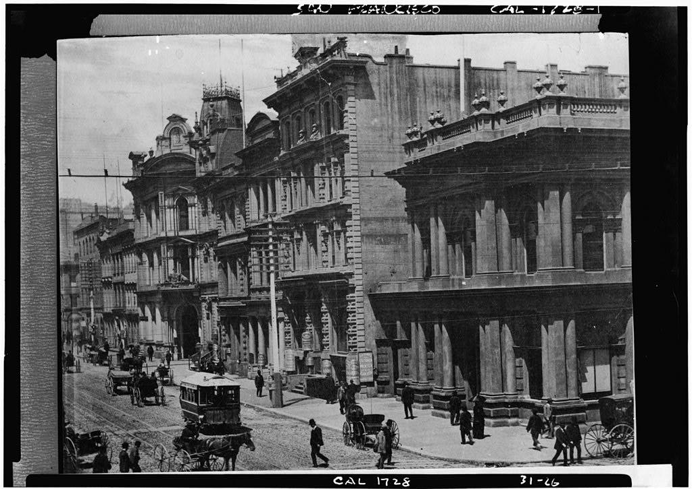
Exterior view of the Bank of California Headquarters #1 (right), San Francisco, c. 1890. (Library of Congress, Historic American Building Survey).
- 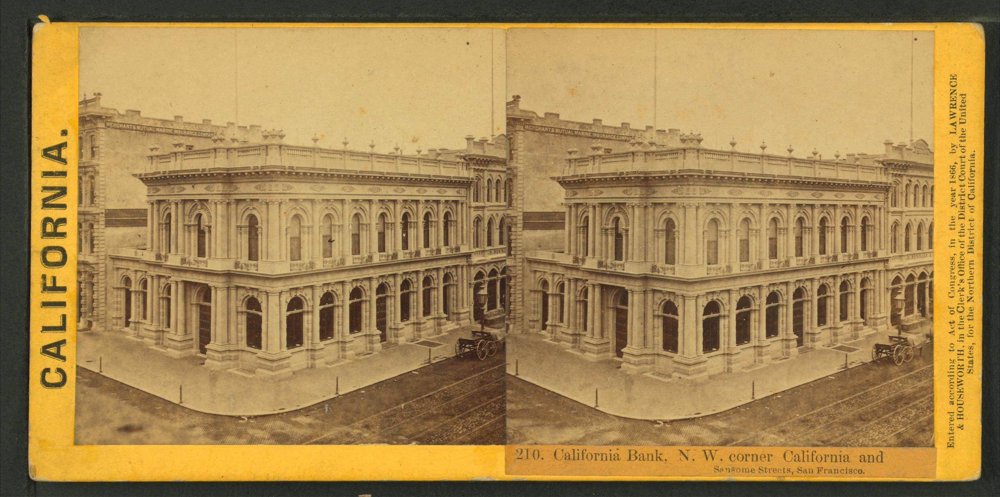
Bank of California.
- 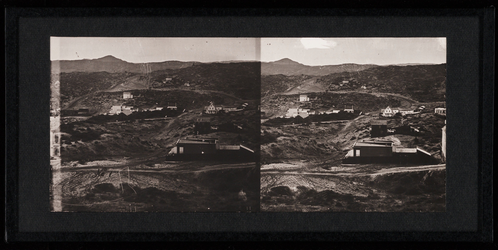
Unidentified buildings on Mariposa Estate. Carleton E. Watkins, ca. 1861. (Beinecke Rare Book and Manuscript Library, Yale University).
- 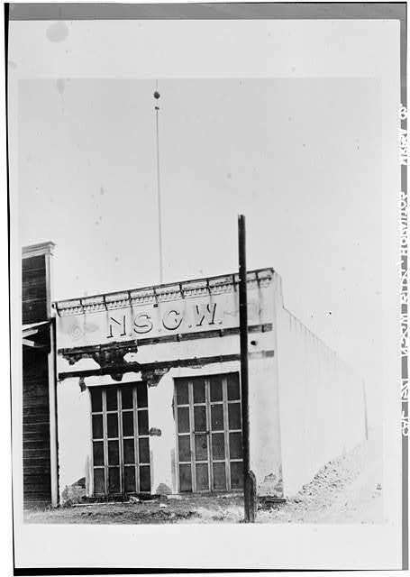
Wells Fargo Express in Hornitos
Typical floor plan for a Wells Fargo Express office like the one in Hornitos.
- 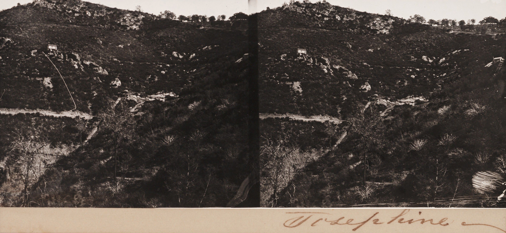
Josephine Mine. Carleton E. Watkins, Mariposa, ca. 1861. (Beinecke Library, Yale University)
- 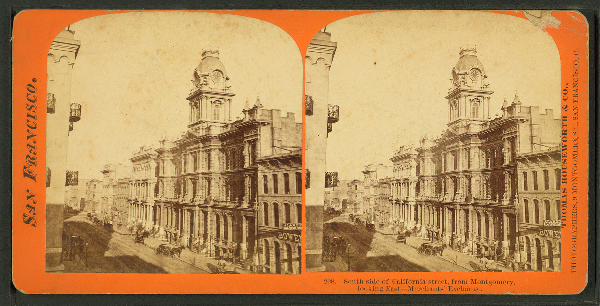
San Francisco Merchants Exchange
- 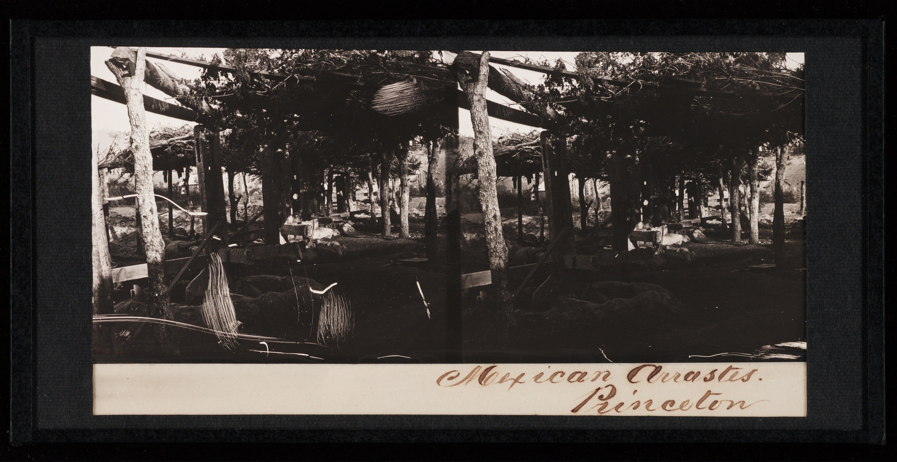
Mexican Arrestes at Princeton Mine. Carleton E. Watkins, ca. 1861. (Beinecke Rare Book and Manuscript Library, Yale University).
- 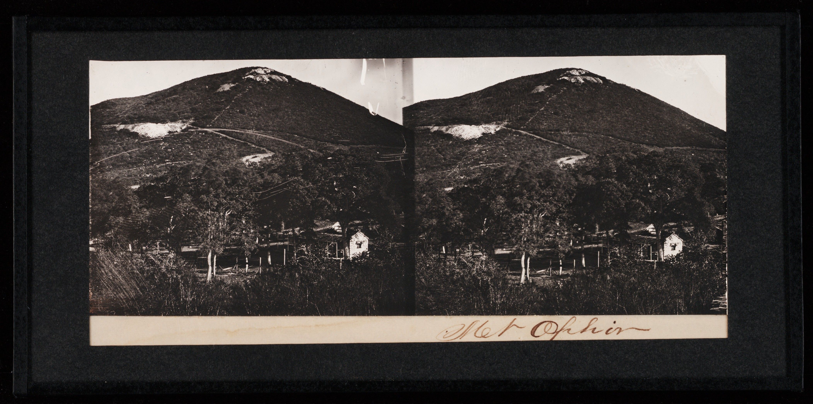
Mt. Ophir. Carleton E. Watkins, ca. 1861. (Beinecke Rare Book and Manuscript Library, Yale University).
- 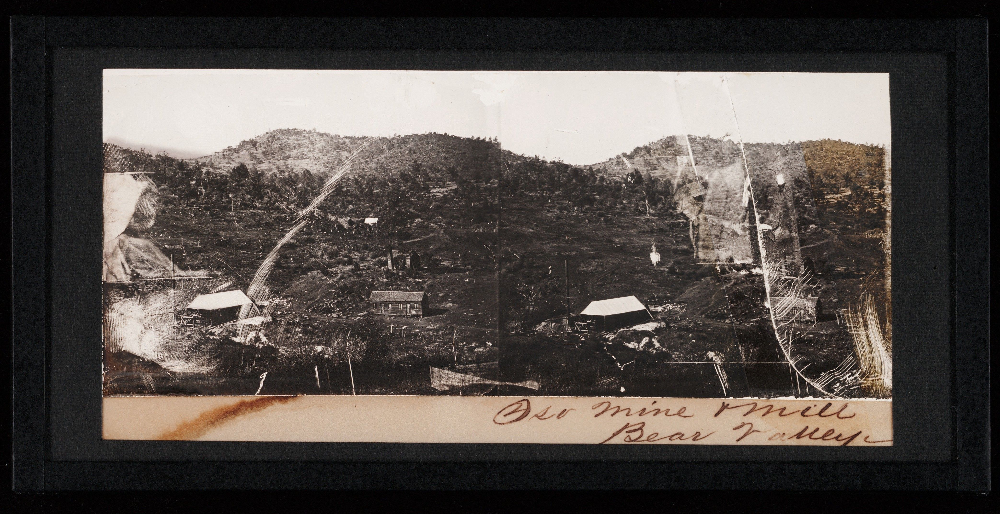
Oso Mine and Mill. Carleton E. Watkins, ca. 1861. (Beinecke Rare Book and Manuscript Library, Yale University).
- 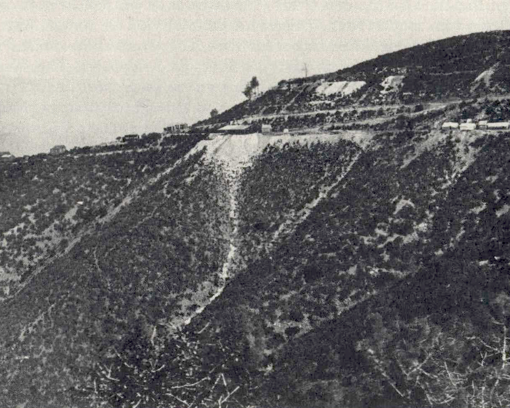
Pine Tree Mine.
- 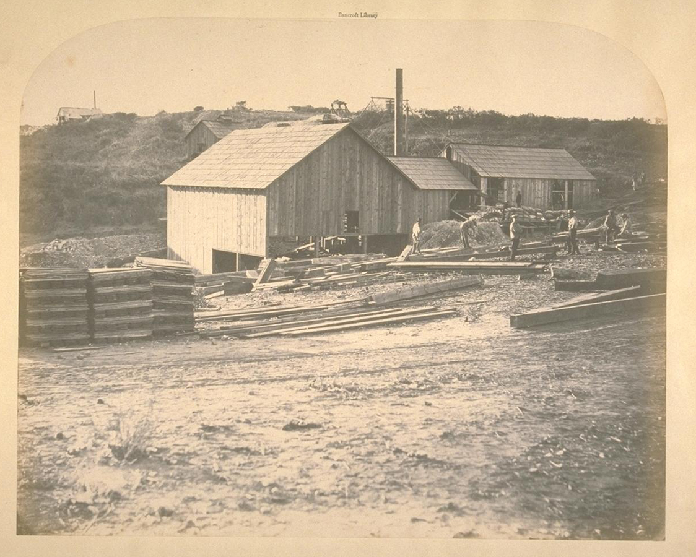
Princeton Mill. Carleton E. Watkins, date unknown. (UC Berkeley, Bancroft Library).
- 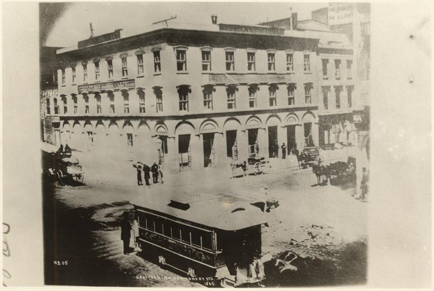
Wells Fargo Express building in San Francisco's financial district.